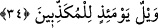

gerekirse; o ateşten sıçrayan her kıvılcım sanki sarı bir devedir, ya da siyah bir devedir,
demek olur. Çünkü devenin siyahlığı sarıya çalar. Bu tıpkı bâzı ceylanlara “adem”
denmesi kabilindendir. Beyaz ceylanlara siyah anlamına adem denmesi beyazlıklarına
bir bulanıklığın hâkim olmasından dolayıdır. Develerin sarılığına da başlarındaki siyah
tüylerin siyahlığı karışmıştır da ondan dolayı siyah deve anlamını vermek mümkün hâle
gelmiştir. Nitekim bir hadis-i şerifte şöyle ifâde ediliyor: “Cehennemdeki kötüler tıpkı
zift gibidirler” [224]
Kıvılcımların “kasr”a benzetilmesi, alevlerden saçılan kıvılcımların büyüklüğünü
benzetme yoluyla ifâde etmek içindir. İkinci olarak getirilen sıfat ile o kıvılcımların
develere benzetilmesi ise renkleri, çoklukları, ardarda uçuşmaları, birbirine karışmaları
ve hareketleri açısındandır.
Râğıb’ın Müfredât’ında âyet-i kerîme açıklanırken şöyle deniyor: Sufur kelimesi
asfar kelimesinin çoğuludur. Bâzıları ise bununla kasdedilen “sarılık” değil, yerden
çıkarılan tunç mâdenidir, demişlerdir. Kelimenin yapısındaki bu mâden anlamından
dolayı Arapçada bakıra “sufur” derler.
et-Te’vilâtü’n-Necmiyye’de ise bu âyet-i kerîme şöyle anlaşılır: Behîmî/hayvanî,
sebûî yırtıcı hayvanî ve şeytânî sıfatlardan her biri gerek katılık ve gerekse şiddetine
göre yüksek köşkler ve göklere kadar yükselen burçlar gibidir. Ya da bunlar vücud
yapısı kocaman ve iri olan sarı develer gibidirler. Alevler o kadar yüksektir ki bu
yükseklik o alevlerdeki ateşin kuvvetindeki şiddetten kaynaklanmaktadır. Bu kuvvet
kuvve-i gadabiyye’dir.
34. O gün, (hakîkatleri) yalan sayanların vay hâline!
“O gün” kıyâmet gününün korkularını ve âsîlerin o günkü durumlarını “yalan
sayanların vay hâline!” Kâşifî demiştir ki; yalan söyleyenlerin vay hâline ki
cehennemin sıfat ve kıvılcımlarına inanmazlar.
[224]. Bk. Kurtubî, XIX, 164.